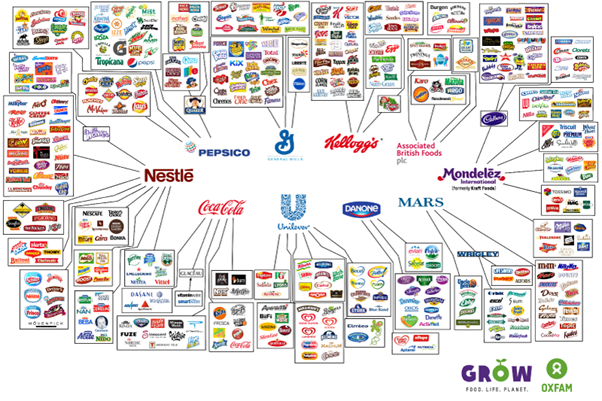

54 Economic Sectors
54.1 Food
Roberts
And then there are the food monopolies. Four companies – the Archer-Daniels-Midland Company, Bunge, Cargill and Louis Dreyfus, known collectively as ABCD – control an estimated 70-90% of the global grain trade. They have been taking advantage of the food supply crisis by hiking their profit margins. Further up the food chain, just four corporations — Bayer, Corteva, ChemChina and Limagrain — control more than 50% of the world’s seeds . From seeds and fertilizer to beer and soda, just a small number of firms maintain a powerful hold on the food industry, determining what is grown, how and where it’s cultivated and what it sells for. Only 10 companies control almost every large food and beverage brand in the world. These companies — Nestlé, PepsiCo, Coca-Cola, Unilever, Danone, General Mills, Kellogg’s, Mars, Associated British Foods, and Mondelez — each employ thousands and make billions of dollars in revenue every year.

54.2 Housing
54.2.1 Land Tenure Finance
Ryan-Collins Abstract
his article examines the links between private property in land and the financial system. Private landed property (PLP) has played an important role in supporting the growth of modern banking and credit systems, industrialization, and economic democratization. However, since the 1980s, high-income economies have exhibited a strong preference for PLP as a form of tenure, in the form of home ownership in particular. This pattern has combined with financial liberalization and innovation to create a land-finance feedback cycle with negative social and economic outcomes. They include a housing affordability crisis for younger and poorer socioeconomic groups; rising wealth inequality as land rents have become more concentrated; economic stagnation due to capital misallocation; and increased financial fragility as household debt has exploded. We illustrate these historical processes in the Anglo-Saxon “home-owning democracies,” where they have been strongest, focusing in particular on the United Kingdom, Australia, and the United States. This article considers how alternative tenure arrangements and reforms to finance and taxation could help mediate these dynamics.
Ryan-Collins Memo
Residential Capitalism
The dominant model of land tenure in high- income economies is private ownership, whether the use is commercial or residential. This fact is rarely questioned, but it could be considered one of the great paradoxes of modern capitalist economies. For, unlike most com- modities, land (considered as location) does not observe the basic rules of supply and demand upon which capitalist exchange and markets depend for their operation and efficiency. Land has special properties— inherent scarcity, fixity, and irreproducibility. As a result, increased demand yields higher economic rents, which tend to be capitalized into the market value of land. To say that land—which absorbs the growing wealth of the community and wider society in which it sits— should be privately owned and its value only lightly taxed (relative to income and profits) is perverse since the “owner” has done nothing to merit such gains. It was for this very reason that the founding fathers of modern economics—Adam Smith, David Ricardo, John Stuart Mill, and Karl Marx—viewed the landed class and land rents more gener- ally as a threat to capitalist development.
An important reason private landed property (PLP) has become so entrenched as a mode of tenure is its intimate relationship with finance. Titled, privately owned land is arguably the most attractive form of collateral in existence for financial institutions, given the above- mentioned special properties. By supporting the develop- ment of modern banking, PLP encouraged economic development and industrialization in both settler colonies and feudal regimes. The perverse economic effects of PLP are then, to some extent, counter- balanced by its enabling of finance and capitalist development.
But the interaction between land and finance is a delicate one. As a result of financial liberalization and globalization in advanced economies, financial speculation has become the dominant motive for investment in land and its appurtenances (most notably residential housing) and the source of negative consequences for society and the economy.
Policy attention has focused almost exclusively on so-called supply- side solutions to the housing problem, whether it be deregulating planning or zoning systems or just building more affordable homes, with much less attention paid to the demand side of the equation or the underlying institutions that have created the land-finance cycle.
In academia, the term “financialization” (of housing/real estate) has become popularized since the 2008 global financial crisis (GFC). However, a number of urban scholars, including Anne Haila, noted the problem of land being exploited as a financial asset rather than a factor of production or consumption good well before the GFC.
In one of her final works, critiques classical economists, who underestimated the ongoing power of landowners in capitalist accumulation. She also notes more recent trends of both corporations and the public sec- tor selling off land in order to release capital to their core business and public services, respectively. She calls for “a theory explaining landowners’ power and alliance with financiers, and the relationship between real estate and finance sectors”.
In this article, I focus on the relationship between PLP and the financial sector over time, with special attention to Anglo-Saxon lib- eral capitalist economies, in particular the United Kingdom, the United States, and Australia, where this mode of tenure, along with financial liberalization, has been promoted most vigorously.
In the hierarchy of risk of property titles, land carries the least risk, being superior to real capital goods, tradable assets, and contracted income. The more secure the debtor’s property title, the more easily he or she can secure credit and the lower the rate of interest. The rate of interest is then determined by the quality of collateral, and there is no “natural rate” that clears the goods market achieving equilibrium. This point has been noted by some economists critical of an equilibrium notion of perfect information.
Credit constraints, which are judged by the degree of liberalization of the mortgage credit markets, are the “elephant in the room,” helping to ex- plain significant differences in house prices and consumption between countries such as Germany, the United States, the United Kingdom, and Japan.
The deregulation of mortgage finance was initiated in the United States, the United Kingdom, and Australia following the collapse of the Bretton Woods agreement, which led to the freeing up of interna- tional credit flows and increasing competition between the New York and London financial sectors (Helleiner 1994; Krippner 2011). The election of conservative, free- market- oriented leaders (Reagan and Thatcher) in the United States and the United Kingdom led to the re- peal of regulations that prevented banks from competing with build- ing societies and other established housing finance institutions. Limits on interest rate charges and tax disadvantages were removed, along with other sectoral credit controls on mortgage credit—the so-called Big Bang. The removal of foreign exchange controls also made banks less dependent on domestic deposits for their funding, de-linking do- mestic incomes from mortgage credit growth.

From the mid-1970s, U.S. banks were able borrow from abroad to finance mortgages, in particular from the largely unregulated “Euro-dollar” market. Domestic financial innovations also enabled banks to attract deposit funding away from the thrifts.
By opening up housing finance to a vast global investment sector, it broke down previous na- tional and local institutional barriers to the funding of home purchase.
A key development motivating these dynamics in high- income economies in the 1980s was the emergence of a new international regulatory framework—the “Basel Accords”—that introduced for all banks minimum capital requirements that are related to the type of assets they held. Loans secured by mortgages on residential properties only carried half the risk weight (50 percent) of loans to non-financial firms in the original Basel Accord. Securitized mortgages, which were viewed as more liquid and thus even less risky, only carried a 20 per- cent risk weight. The effect of these reforms was to allow banks to earn fees and net interest margins by holding 2.5 times more credit risk in real estate than they had before, without any increase in their capital requirements.
These regulatory strategies can be seen as a classic example of the fallacy of composition. Regulators and banks, encouraged by policy- makers keen to boost homeownership levels, were right to consider that at the level of any individual bank, a residential mortgage loan will be less risky than an unsecured loan to a firm. But from the perspective of macroeconomic and macro-financial stability, the synchronized expansion of mortgage credit well beyond the rate of growth of GDP and of incomes was clearly problematic. Until the 2007–2008 crisis, however, central banks were reluctant to act, continuing to strictly observe their mandated focus on consumer price stability.
Credit and finance are not neutral. Where they go determines their effect on the economy. Traditional lending to firms supports capital investment and helps pay wages, leading to increased GDP transac- tions, economic growth, and productivity. The increased growth in the economy enables firms to pay back both the principal and the interest, preventing the build-up of excessive debt overhangs. But credit creation for the purchase of existing property and land increases property prices without stimulating investment or wages. Households must either take on more debt or reduce their spending, leading firms to cut back on investment, leading to lower profits and stagnating wages. This, in turn, feeds into more demand for mortgage debt as house prices continue to rise relative to incomes, generating a positive feedback cycle where increasing mortgage credit effectively creates its own supply. A study of 46 economies over 1990–2011 found a negative relationship between the stock of bank lending to domestic real estate and economic growth but positive growth effects of credit flows to non-financial business.
In Anglo-Saxon economies, homeownership levels appear to have peaked in the early 2000s and have been falling since then, despite further increases in mortgage debt relative to GDP. In these countries, housing wealth and land rents have become more concentrated in older and richer cohorts, with significant growth in “petty landlordism” and second-home ownership.
Privatized Keynesianism
This model of economic development has been termed “privat- ized Keynesianism” or “house-price Keynesianism”. Encouraging the personal accumulation of assets, such as housing equity, as a means of meeting the cost of social care and retirement needs in an aging population also made political sense to neoliberal governments keen on reducing the role of the state. “Asset-based wel- fare” began to emerge as a new policy framework, with homeowner- ship leading to less support for higher taxes to fund universal welfare provision and pensions.
The embrace of financial liberalization and homeownership by Anglo-Saxon capitalism may have also been driven, in part, by broader national economic strategies towards globalization. These countries saw their export industries, in particular manufacturing, facing fierce competition from China and other emerging markets and may have seen attracting foreign investment into real estate and other financial assets as a means to offset the resulting trade deficits. Other Western economies, such as Germany and Sweden, were able to preserve their manufacturing sectors and generate current account surpluses that made assetinflation a less attractive macroeconomic strategy.
Post-2008 Developments
Post-crisis, central banks have taken a closer interest in monitoring house prices and introduced macro- prudential policies aimed at restricting real estate credit to address “systemic risks” across national economies (Cerutti et al. 2017). Regulators have imposed limits to loan-to-value and loan-to-income ratios for mortgages and also targeted buy-to-let and interest-only mortgages with some success in the United Kingdom, Australia, Switzerland, New Zealand, and Hong Kong.
However, countervailing this has been extraordinarily loose mon- etary policy. Short-term policy interest rates have been reduced to the zero lower bound, whilst quantitative easing (QE) programs have driven down medium- and longer-term rates via the vacuuming up of government bonds from capital markets. The hope was that this would lead investors to invest more in risky, real-economy investments such as debt and equity issued by companies. But the evidence suggests that, rather than stimulating real-economy growth, QE has pumped up asset prices, in particular house prices.
The “wall of liquidity” created by QE catalyzed a global search for higher yielding, but safe, assets). Landed property, particularly in rich global cities, proved to be one of the most attractive assets for investors with global reach, not least because they could easily source borrowing, backed by property assets, at ultra-low interest rates from a banking sector still with a preference for real estate. Property prices in global cities have “synchronized,” with price dynamics closer to each other than with cities and regions in domestic hinterlands (Duca 2020). Although speculative buyers from both home and abroad usually target “prime” (very expensive) properties, speculation raises prices across these cities and means they become unaffordable for those on middle incomes.
A financial sector that has become so dependent on high and rising collateral values.
Only a developer protected from the profit motive, such as the state itself, can ever have any incentive to produce houses at a rate that would lower the cost of housing overall in the area they are being built.
East Asian states, in particular Singapore and Hong Kong, adopted a strategy of public land value (or rent) capture, becoming “property states.” In Singapore, 90 percent of the land is owned by the state, which leases it out for development, enabling it to capture land value i ncreases as leases come up for renewal; 82 percent of the resident population lives in high-quality public housing provided by the state. This creates a virtuous circle of socialized non-bank mortgage finance that has proven effective at providing affordable housing. The average house- price-to-income ratio in Singapore is one of the lowest in Asia and has been falling since a housing bubble in the mid-1990s. Meanwhile, the system provides the Singapore government with a handsome source of public revenues.
More aggressive macro-prudential policy would seem the most obvi- ous and easiest first step for central banks and financial regulators seeking to reduce the flow of mortgage credit into real estate.
The easiest way to introduce such a scheme might be to have some form of productive credit ratio, whereby a minimum ratio (such as 30 percent) of a bank’s assets should support non-financial firms. Currently, that ratio is around 10 percent on average in the United Kingdom.
Regulations should support banks that are able to de-risk their loans via methods other than property-based collateral. “Stakeholder banks” are more focused on business lending, do not have such stringent collateral requirements, and devolve decision-making to branches. They de-risk their loans not by requiring property as collateral but by building up strong and long-lasting relationships with and understanding of the businesses they lend to.
A tax on the incremental increase in the unimproved market value of land that would fall upon the landowner is the obvious policy choice, following Henry George’s ([1879] 1884) concept of a land value tax (LVT). By attaching a cost to owning land, LVT diminishes the incentive to buy land for speculative purposes—in hopes of real- izing capital gains—rather than for productive purposes or simply to provide shelter.
By the 1980s, the interaction between titled land and finance morphed into a damaging feedback cycle whereby the financial sectors became addicted to property as the main source of profits, collateral, and dominant assets on the bal- ance sheets of financial institutions. The more credit flows into land, the higher house prices and collateral prices go, and the more attrac- tive property becomes as an asset against which to lend. Ultimately, this leads to land and house prices rising well above incomes, driving up land rents and creating financial fragility and widening wealth inequality.
Ryan-Collins (2021) Private Landed Property and Finance: A Checkered History (pdf)
54.3 Ocean (‘Blue’) Economy
Crona Abstract
Ocean activities are rapidly expanding as Blue Economy discussions gain traction, creating new potential synergies and conflicts between sectors. To better manage ocean sectors and their development, we need to understand how they interact and the respective outcomes of these interactions. To provide a first comprehensive picture of the situation, we review 3187 articles to map and analyze interactions between economically important ocean sectors and find 93 unique direct and 61 indirect interactions, often mediated via the ocean ecosystem. Analysis of interaction outcomes reveals that some sectors coexist synergistically (e.g. renewable energy, tourism), but many interactions are antagonistic, and negative effects on other sectors are often incurred via degradation of marine ecosystems. The analysis also shows that ocean ecosystems are fundamental for supporting many ocean sectors, yet 13 out of 14 ocean sectors have interactions resulting in unidirectional negative ecosystem impact. Fishing, drilling, and shipping are hubs in the network of ocean sector interactions, and are involved in many of the antagonistic interactions. Antagonistic interactions signal trade-offs between sectors. Qualitative analysis of the literature shows that these tradeoffs relate to the cumulative nature of many ecosystem impacts incurred by some sectors, and the differential power of ocean sectors to exert their rights or demands in the development of the ocean domain. There are also often time lags in how impacts manifest. The ocean governance landscape is not currently well-equipped to deal with the full range of trade-offs, and opportunities, likely to arise in the pursuit of a Blue Economy in a rapidly changing ocean context. Based on our analysis, we therefore propose a set principles that can begin to guide strategic decision-making, by identifying both tradeoffs and opportunities for sustainable and equitable development of ocean sectors.
Crona (2021) Sharing the seas: a review and analysis of ocean sector interactions (pdf)
54.3.1 Financing the Ocean Economy
Sumaila Abstract
The ocean, which regulates climate and supports vital ecosystem services, is crucial to our Earth system and livelihoods. Yet, it is threatened by anthropogenic pressures and climate change. A healthy ocean that supports a sustainable ocean economy requires adequate financing vehicles that generate, invest, align, and account for financial capital to achieve sustained ocean health and governance. However, the current finance gap is large; we identify key barriers to financing a sustainable ocean economy and suggest how to mitigate them, to incentivize the kind of public and private investments needed for topnotch science and management in support of a sustainable ocean economy.
54.4 Blue Hegemony
Schutter Abstract
The blue economy has become an influential concept in international and national marine governance discourse. Various contested interpretations exist, and different actors choose to emphasise different aspects of the triple goal of environmental, economic, and social improvements. However, despite disagreement over its in terpretations, the blue economy finds support in many different arenas. This paper explores the position of dominance that the blue economy has reached, and examines how supporters of the concept maintain and employ power to keep it relevant. The paper applies a mixed-methods approach: 29 semi-structured interviews with people in roles of formal decision-making across the fisheries sector, economic development and tourism sector, conservation and environment sector, and specific blue economy-institutions are supplemented by ob servations from the wider landscape during 4 months of fieldwork in Seychelles. Findings show that in inter national discourse, the blue economy obtains and maintains its influence through persuasion and through the construction of a ‘common sense’ and productive way forward, capable of achieving triple wins. Within this narrative, oceans are undergoing a reconfiguration as economic frontiers, and the blue economy places economic growth from oceans centrally within contemporary environmental governance. Maintaining the blue economy as a powerful concept on the ground is done through social power relations: the blue economy functions as a boundary object, contributing to depoliticisation of discussions about a shared vision. Depoliticisation allows Seychelles to continue using the concept despite simmering dissent among policy makers, practitioners, and resource users. Dominance of the blue economy on the international stage means that associating with it brings Seychelles visibility and influence. The usefulness of the concept in eliding tensions makes it difficult for counter- hegemony to arise, although alternatives are emerging elsewhere, such as blue justice. However, fundamental change is needed to re-politicise environmental decision-making and explicitly discuss values and images attached to the blue economy.
Schutter Memo
The blue economy has widely gained influence at the international stage, and ties in with the hegemonic regimes of contemporary global environmental governance. It has become influential through persua sion and consent, and the boundary object status is useful to facilitate communication but also to offer something to everyone. The triple bottom line promise creates an appealing sense of progressive change, benefiting the economic, environmental, and social dimension simul taneously. Interest in the blue economy is further fuelled by framings of the ocean as underdeveloped and underexplored [31,62], and in need of rational management. The blue modernisation narrative thus absorbs issues associated with the ocean economy (e.g. coral bleaching, pollu tion, industrial overfishing). It avoids “challeng[ing] the factors causing our ecological ills” [77], constituting a passive revolution of continued and even accelerated exploitation through closing off pathways to alternative trajectories [66]. The emerging conceptualisations and proposed ways of governing oceans also determine who is considered to be connected to the ocean, and consequently, which stakeholders have a voice in blue economy debates. The lack of a culture of local civil society engagement and the ambiguity in the concept means that local engagement in Seychelles has proven difficult. Instead, voices from the international civil society have managed to gain positions of influence, strengthened by the increased reliance on NGOs in marine environmental governance following eco nomic restructuring and cuts in government budgets.
Schutter (2021) The blue economy as a boundary object for hegemony across scales (pdf)